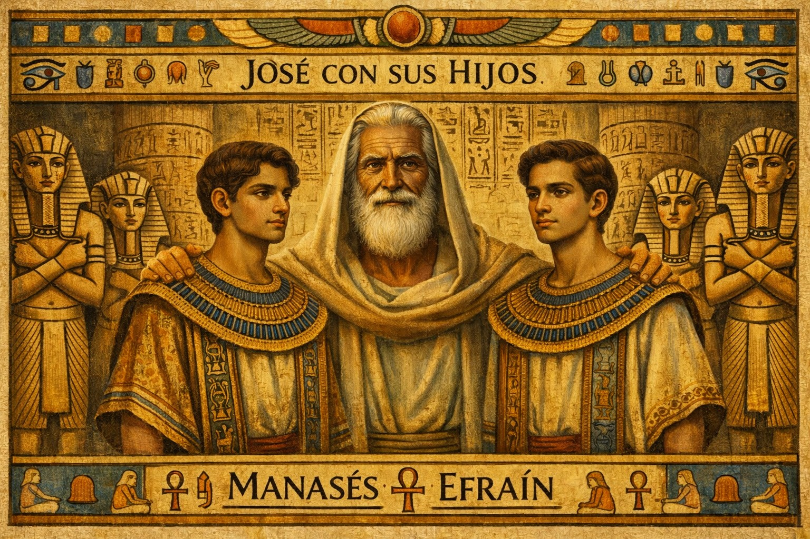
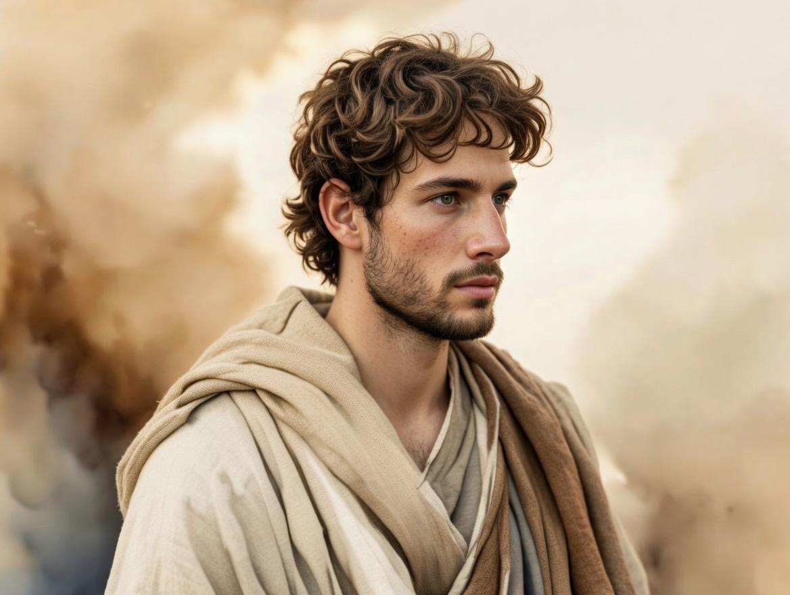
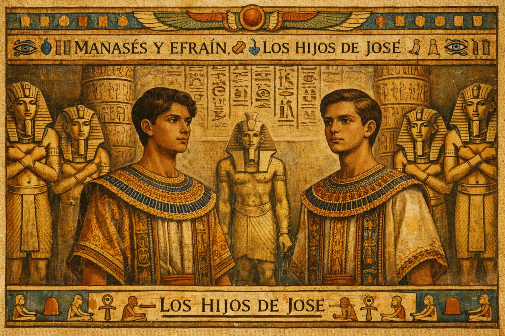
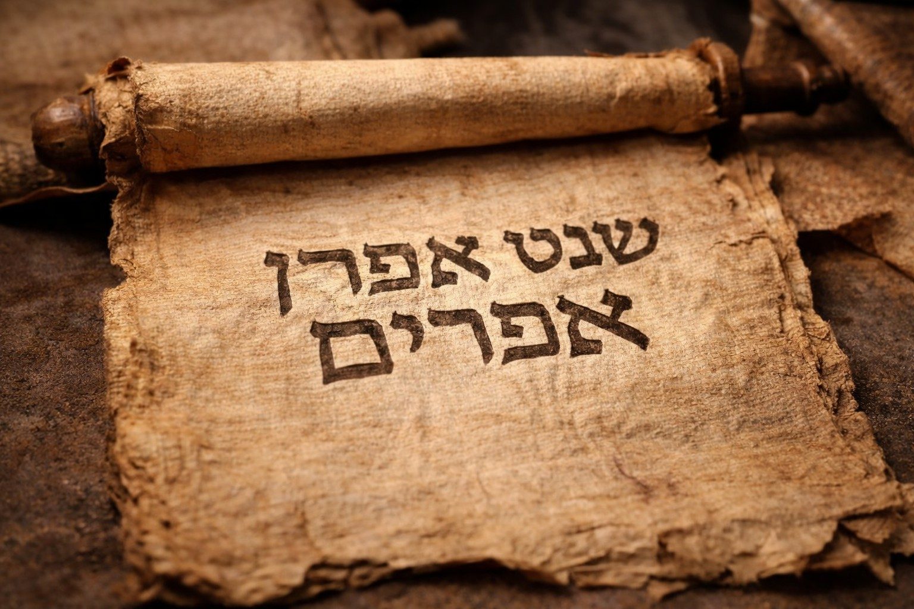
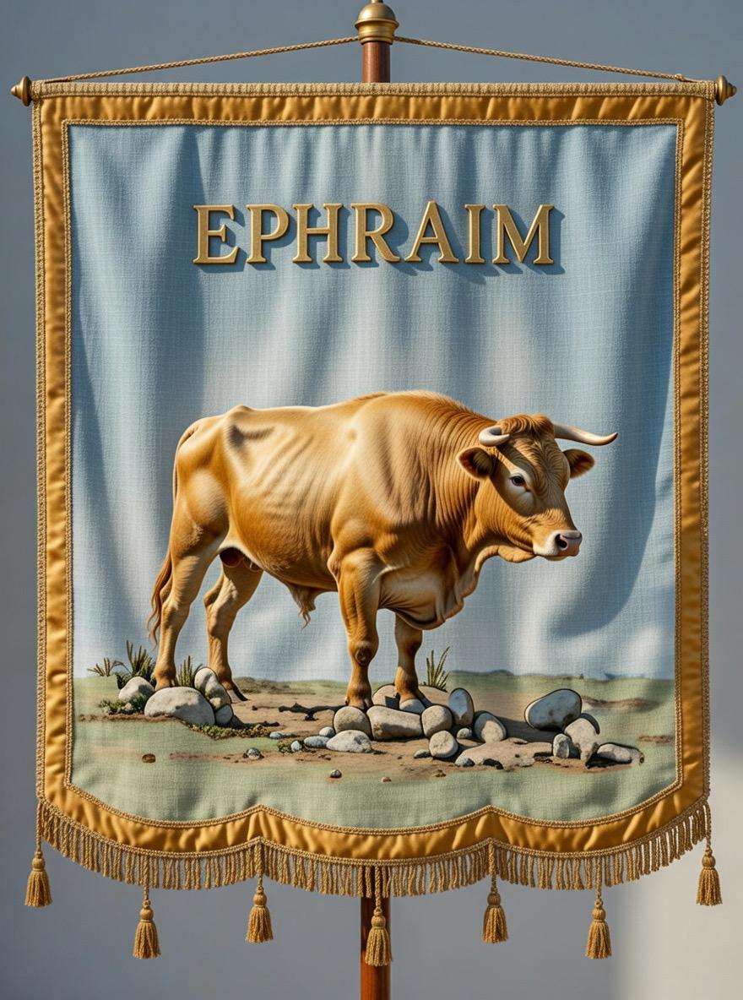

Listado detallado de las 12 tribus de Israel
- Rubén: El primogénito de Jacob.
- Simeón: Hijo de Jacob y Lea.
- Leví: Tribu sacerdotal que no recibió territorio propio.
- Judá: Tribu de donde provino la línea mesiánica y David.
- Dan: Hijo de Jacob y Bilha.
- Neftalí: Hijo de Jacob y Bilha.
- Gad: Hijo de Jacob y Zilpa.
- Aser: Hijo de Jacob y Zilpa.
- Isacar: Hijo de Jacob y Lea.
- Zabulón: Hijo de Jacob y Lea.
- José el hijo de Jacob y Raquel.,(dividido en dos tribus): Efraín y Manasés,
- Benjamín: El hijo menor de Jacob y Raquel.
Contexto Importante
Tras la muerte de Salomón, el reino se dividió en el Reino de Israel (norte) y el Reino de Judá (sur). Las tribus del norte fueron exiliadas y con el tiempo se conocieron como las “diez tribus perdidas”.
Variaciones
En la división de tierras de Israel, la tribu de Leví fue omisa en la asignación de tierras, mientras que las dos tribus de los hijos de José, Efraín y Manasés, fueron incluidas. Esto se debe a que los levitas, como descendientes de Leví, eran responsables de funciones sacerdotales y no tenían tierras asignadas. Según la Biblia, Dios eligió a Aarón, un levita, como sumo sacerdote y estableció su linaje apartado para el servicio religioso. La tribu de Leví, que incluía a figuras clave como Moisés y Aarón, desempeñó un papel crucial en la adoración y la enseñanza de la Ley de Dios.
La tribu de Efraín
La tribu de Efraín fue una de las doce tribus de Israel, descendiente del hijo menor de José y Asenat. Aunque era el menor, Jacob lo bendijo por encima de su hermano Manasés, haciéndolo una de las tribus más poderosas del Reino del Norte. Se les asignó un territorio central y fértil en Canaán.
Puntos clave sobre Efraín
- Origen y Bendición: Efraín nació en Egipto y fue adoptado por su abuelo Jacob, convirtiéndose en cabeza de tribu. Su nombre significa "doblemente fructífero
- Liderazgo e Influencia: Fue una tribu guerrera y prominente. Figuras importantes como Josué, quien conquistó Canaán, provenían de Efraín.
- Territorio: Se ubicaron en el centro de la tierra prometida, una región montañosa clave que incluía a Silo, donde se guardó el Arca de la Alianza.
- Reino del Norte: Tras la división de Israel, Efraín fue la tribu líder de las diez tribus del norte, a menudo llamándose "Efraín" a todo el reino. Jeroboam, el primer rey del norte, era efraimita.
- Decadencia y Cautiverio: Debido a su orgullo, rivalidades con otras tribus (como Judá) e idolatría, la tribu fue criticada frecuentemente. Fueron llevados cautivos por los asirios en el 722 a.C..
- Identidad: Se les conoce como parte de las "diez tribus perdidas".
- En el contexto bíblico, a pesar de sus errores, la historia de Efraín destaca la soberanía de Dios en la elección y bendición.
La historia de Efraín "el hijo de José"
Efraín, hijo de José, recibió una bendición especial de su abuelo Jacob que hizo que Efraín se convirtiera en el líder de una de las 12 tribus de Israel. Ya que era el hijo menor, la bendición que recibió estaba destinada por tradición al hijo mayor. La historia de Efraín es una prueba de que Dios actúa más allá de las tradiciones. Efraín fue uno de los hijos de José, uno de los doce hijos de Jacob. Su madre era Asenat, hija de un sacerdote egipcio. Cuando Jacob, el abuelo de Efraín, ya estaba viejo, llamó a José para bendecir a sus dos hijos, Manasés y Efraín.
Cuando Jacob cruzó las manos al bendecirlos, colocó la mano derecha sobre la cabeza de Efraín, el menor, y la izquierda sobre Manasés, el mayor. Esto indicaba que Efraín tendría una posición más alta en el futuro. José intentó corregir a su padre, pero Jacob insistió, declarando que Efraín sería más bendecido y formaría una gran nación.
Los descendientes de Efraín se convirtieron en una de las doce tribus de Israel, desempeñando un papel importante en la historia del pueblo hebreo. La tribu de Efraín fue una de las más fuertes e influyentes, liderando muchas veces a las demás tribus del norte. Sin embargo, la Biblia también relata momentos de orgullo y desobediencia por parte de los efraimitas, lo que trajo conflictos y pérdidas.
La historia de Efraín nos enseña que Dios es soberano en sus elecciones y esto puede sorprendernos. A pesar de ser el menor, Efraín recibió una bendición especial. Esto muestra que Dios no se limita a reglas sociales o tradiciones, sino que elige actuar según su voluntad.
La trayectoria de la tribu también advierte sobre los peligros del orgullo y la desobediencia, destacando la importancia de confiar y obedecer a Dios.
La vida de Efraín nos recuerda que las bendiciones de Dios son fruto de la gracia, no de nuestros méritos.
Estudio bíblico sobre Efraín
Jacob bendice a Efraín antes que a Manasés: La historia de Jacob bendiciendo a Efraín antes que a Manasés está en Génesis 48. Cuando Jacob estaba cerca de morir, llamó a José, su hijo, para bendecir a sus nietos, Efraín y Manasés. José posicionó a Manasés, el mayor, a la derecha de Jacob, y a Efraín a la izquierda, siguiendo la tradición de dar la mayor bendición al primogénito. Sin embargo, Jacob cruzó las manos, colocando la mano derecha sobre Efraín y la izquierda sobre Manasés.
José intentó corregir a su padre, pero Jacob insistió, diciendo que Efraín, el más joven, sería mayor que su hermano. Jacob declaró que ambos serían bendecidos, pero Efraín tendría un futuro más prominente, su descendencia formaría multitud de naciones (Génesis 48:19).
Esta inversión de bendiciones muestra que Dios actúa más allá de las expectativas. Él elige y bendice según su voluntad, no según las tradiciones o méritos aparentes. Así como Efraín fue favorecido, Dios usa frecuentemente a los que pueden parecer improbables para cumplir sus planes.
La historia nos enseña a confiar en los propósitos soberanos de Dios, incluso cuando parecen contradecir la lógica humana. Dios ve más allá de las apariencias y trabaja de acuerdo con su plan perfecto para cumplir sus promesas.
La tribu de Efraín
La tribu de Efraín desciende de Efraín, el hijo menor de José, uno de los 12 hijos de Jacob. Efraín fue bendecido por Jacob de manera especial, por encima de su hermano mayor, Manasés, como vemos en Génesis 48. A pesar de ser el menor, Jacob declaró que Efraín se convertiría en una gran nación, mostrando que Dios elige según su voluntad.
Después del Éxodo de Egipto y la conquista de Canaán, la tribu de Efraín recibió una región fértil en el centro de Israel (Josué 16-17), incluyendo la ciudad de Silo, donde el arca de la alianza fue guardada durante años. Efraín se convirtió en una tribu influyente, liderando a menudo a las tribus del norte.
La historia de la tribu incluye momentos de gloria y desafíos. Líderes importantes como Josué, quien guió a los israelitas en la conquista de Canaán, provenían de Efraín. Sin embargo, la tribu también fue criticada por su orgullo y rivalidades con otras tribus (Jueces 8 y 12).
La trayectoria de la tribu de Efraín enseña sobre la soberanía de Dios, que elige a quien desea bendecir, y advierte contra el orgullo y la desobediencia, que pueden traer dificultades incluso a los más favorecidos.
Por qué la tribu de Efraín fue rechazada
Durante la conquista de Canaán, Efraín recibió tierras fértiles y se volvió influyente en Israel. Sin embargo, con el tiempo, su tribu enfrentó problemas espirituales.
La tribu de Efraín fue rechazada por Dios por su desobediencia y orgullo. Los profetas Oseas e Isaías destacan el alejamiento de la tribu de los caminos de Dios. En Oseas 4:17, Dios declara: “Efraín es dado a ídolos; déjalo." La tribu fue acusada de idolatría, desobediencia a la ley de Dios y arrogancia hacia otras tribus.
Efraín tampoco cumplió plenamente los mandamientos de Dios. No expulsaron completamente a los cananeos de su tierra, viviendo con prácticas paganas (Jueces 1:29). Además, las constantes rivalidades y quejas, como en Jueces 12, mostraban su orgullo.
El rechazo de Efraín enseña que las bendiciones iniciales no garantizan una fidelidad continua. Dios valora la obediencia y un corazón humilde. Por eso, estamos llamados a permanecer fieles, evitando la idolatría y el orgullo que nos alejan de la comunión con él.
Después del rechazo de Efraín, la tribu enfrentó una decadencia espiritual, política y social que culminó en la pérdida de su influencia en Israel. Cuando el reino de Israel se dividió, la tribu de Efraín pasó a formar parte del reino del norte.
El rechazo definitivo llegó con la conquista del reino del norte por los asirios (2 Reyes 17). Muchos efraimitas fueron exiliados y su tierra fue ocupada por extranjeros.
La descendencia de Efraín
En 1 Crónicas 7:20-29, se detallan los descendientes de Efraín, destacando a sus hijos y nietos. Efraín tuvo hijos como Sutela, Bered, Tahat, Elada y Ezer, y sus descendientes formaron varias familias.
El pasaje también menciona algunos desafíos que enfrentaron los efraimitas, como la invasión de los habitantes de Gat, que mató a muchos de ellos. Sin embargo, los hijos de Efraín continuaron creciendo y se establecieron linajes en diversas áreas.
La historia muestra cómo la tribu de Efraín se expandió a lo largo de las generaciones, manteniendo su identidad y herencia, incluso frente a las dificultades.
Lecciones que podemos aprender de la historia de Efraín.
La historia bíblica de Efraín ofrece lecciones importantes para nuestra vida espiritual. Aunque Efraín comenzó con una bendición especial de Jacob (Génesis 48), su trayectoria muestra los peligros del orgullo, la desobediencia y la negligencia espiritual.
Con su vida, aprendemos que Dios elige conforme a su voluntad; él es soberano. Efraín, el hijo menor, fue bendecido por encima de Manasés, el mayor. Esto nos enseña que Dios no sigue patrones humanos y puede usar a personas inesperadas para cumplir sus planes. Debemos confiar en su soberanía y propósito, incluso cuando no comprendemos sus elecciones.
La historia de Efraín advierte sobre los peligros de la idolatría. Los descendientes de Efraín se alejaron de Dios, adorando ídolos e ignorando sus mandamientos (Oseas 4:17). Esto nos recuerda la importancia de poner a Dios en primer lugar, evitando cualquier cosa que desvíe nuestro corazón de él.
La historia de Efraín nos enseña que los privilegios no garantizan fidelidad. A pesar de recibir bendiciones iniciales, la tribu de Efraín no permaneció obediente. Este ejemplo nos desafía a no ser complacientes, sino a buscar continuamente una relación viva y fiel con Dios.
Vemos que Dios es justo, pero también misericordioso. Incluso después del rechazo, él prometió restaurar a los remanentes fieles de Efraín (Jeremías 31:20). Esto refuerza que Dios está siempre presto a darnos la oportunidad para el arrepentimiento.
Aprendamos de Efraín a valorar las bendiciones de Dios, a vivir con humildad y a permanecer fieles a él.
La tribu en la historia bíblica
Después del Éxodo y la conquista de Canaán, Efraín recibió tierras fértiles en el centro de Israel. La tribu fue influyente y lideró muchas veces a las tribus del norte.
Sin embargo también enfrentó críticas por orgullo, rivalidades e idolatría. Los profetas denunciaron su alejamiento de Dios.
Rechazo y caída
Los profetas como Oseas denunciaron la idolatría de Efraín. Con el tiempo la tribu sufrió decadencia espiritual y política.
El reino del norte fue conquistado por Asiria y muchos fueron exiliados, marcando el destino de las llamadas diez tribus perdidas.
Lecciones espirituales
- Dios es soberano y bendice según su voluntad.
- Las bendiciones no garantizan fidelidad.
- El orgullo y la idolatría conducen a la caída.
- Dios siempre ofrece restauración al remanente fiel.
Estandarte de Efraín
El estandarte de la tribu de Efraín representaba un buey (o toro), simbolizando fuerza, fertilidad y primogenitura, basado en Deuteronomio 33:17 que llama a José "su primogénito es su buey". El estandarte a menudo era de color negro y representaba a Josué, líder de esta tribu.
Aquí hay detalles adicionales sobre el estandarte y la tribu de Efraín:
- Significado del Símbolo: El buey o toro representa la fuerza y el poder que la tribu de Efraín tendría, arrinconando a los pueblos. También hace alusión a la bendición de Jacob, donde José (padre de Efraín) es comparado con un buey o novillo.
- Color: Según tradiciones, el color del estandarte era negro.
- Posición en el Campamento: La tribu de Efraín acampaba en el lado oeste del tabernáculo.
- Significado del Nombre: Efraín significa "Dios me hizo crecer en la tierra de mi aflicción".
- Significado adicional: En contextos más amplios, el estandarte de Efraín a veces se asocia con el unicornio o el león. En la tradición mística, el estandarte de Efraín se considera parte de los cuatro estandartes principales que rodeaban el tabernáculo.
- El símbolo del buey también se asocia con la tribu de José en general.

José con sus Hijos.

Las tribus de Israel forman la base histórica del pueblo hebreo y su historia aparece a lo largo de toda la Biblia.

Efraín y Manasés, Hijos de José.

📖 Génesis 48:1 “Aconteció después de estas cosas que dijeron a José: He aquí tu padre está enfermo. Y José tomó consigo a sus dos hijos, Manasés y Efraín.”

La tribu de Efraín.

Su historia muestra tanto bendición como advertencias espirituales para las generaciones futuras.